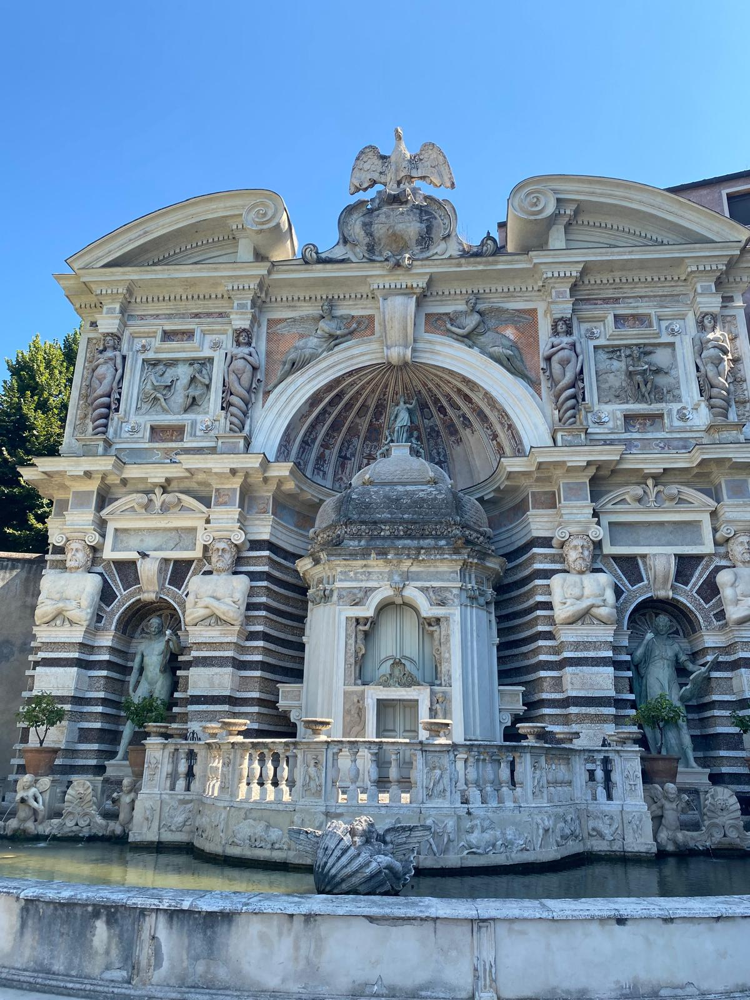

La Fontana dell’Organo è una delle opere più sorprendenti e ingegnose dei giardini della Villa d’Este a Tivoli. Fu ideata da Pirro Ligorio e costruita tra il 1568 e il 1611 con l’intento di stupire i visitatori, unendo arte, architettura e meccanica idraulica. Il suo nome deriva dal complesso meccanismo idraulico che un tempo si trovava al suo interno, capace di suonare come un vero organo grazie al solo movimento dell’acqua, senza alcun intervento umano.
Il congegno, considerato una meraviglia tecnica del Rinascimento, fu progettato dai francesi Luc Leclerc e Claude Venard. Il sistema sfruttava la caduta dell’acqua in una camera sotterranea, dove la pressione generava un potente getto d’aria che alimentava le canne dell’organo, producendo suoni armoniosi. Un secondo flusso d’acqua muoveva invece un cilindro dentato che azionava i tasti, permettendo di creare vere e proprie melodie.
Questo straordinario meccanismo lasciava i visitatori della villa senza parole: si racconta che Papa Gregorio XIII, durante la sua visita nel 1573, rimase così meravigliato dai suoni da voler verificare di persona che non ci fosse nessuno a suonare.

Sebbene il meccanismo originale sia andato perduto nel corso dei secoli, la fontana è stata restaurata e, dal 2003, le sue note risuonano nuovamente nei giardini della Villa d’Este, a intervalli regolari nel corso della giornata (attualmente ogni due ore a partire dalle 10:30).
Dal punto di vista estetico, la fontana è grandiosa: presenta una grande arcata centrale decorata con statue, colonne e rilievi che raffigurano motivi marini e simboli mitologici. Sopra l’arco principale campeggia un’aquila, emblema della famiglia d’Este, mentre dalle bocche delle maschere e dalle nicchie scorre l’acqua che anima l’intera composizione.
La Fontana dell’Organo rimane uno degli esempi più affascinanti della genialità tecnica e artistica del Cinquecento italiano.
